「つるがUMAMIグルメ」とは
【令和4年3月より順次販売開始！！】
overview
本事業は、多くの観光客が敦賀に訪れるという機会を最大限に活かすために、敦賀の豊富な食資源を敦賀ならではの形で楽しむことができる新たな「ご当地グルメ」を下記のルールに基づいて作製したものです。
手すき昆布の旨みたっぷり「UMAMIむすび」
おむすびは２種類、１つには太白を纏わせ、もう１つには黒おぼろ(むき込みおぼろ)を纏わせること(金のおむすび、銀のおむび)
福井米(いちほまれ・コシヒカリ等)を活用すること
具材に福井の食材を活用すること
敦賀産食材の旨みを堪能「UMAMIいろいろグルメ」
敦賀の食材を２種類以上活用すること
本事業のコンセプト(海の恵み、陸と海の玄関口、オープンマインド・おおらかな人間性)に沿ったこだわり・差別化ポイントを明確にすること
UMAMIむすび(6店・6商品)
UMAMI musubi
笑吉 敦賀UMA結び
ソテーした敦賀真鯛を具に、バター焼おむすびにし、太白で巻き上げたおむすびと、サイコロ状のふくいサーモンをたっぷり混ぜ込んだ、おぼろ昆布のおむすび。
居酒屋笑吉(㈲フラワーズコーポレーション)
1,100円
越前若狭 縁むすび
敦賀産コシヒカリ玄米おむすびに、現代の名工が削ったおぼろ昆布を活用し、添える漬物は季節に応じて変化(にしん寿し・赤カンバ千枚漬け・黒河マナ等)。
おむすびや 穂んのり
1,000円
ご当地つるがむすび(昆布)
(地元のおすまし 昆布スープ付き)
具材は外に盛り付けしてあるので自由な形で食べられる。持ち帰り(テイクアウト)も可能。
軽食 喫茶 パイン
880円
敦賀河豚ふくUMAむすび
中の具材(敦賀ふぐ)は、昆布を引き立てるためにうす味。(混ぜ・焼き・炊き込みの3種)
あけぼの旅館
13,200円～
(1泊2食付ふぐコースプランのみ)
敦賀真鯛の味くらべ昆布むすび 炙・焼・煮
地場の食材をふんだんに活用。見栄えや食感を出すために、大きな具材を使用。
伝平荘
11,000円～
(1泊2食付プランの朝食にセット)
敦賀真鯛のたいむすびランチ
敦賀真鯛を様々な調理(揚げ物・蒸し物等)でアレンジしたランチメニュー。地場の食材をふんだんに活用。
中村旅館
2,750円
UMAMIいろいろグルメ(15店・18商品)
UMAMI iroiro gurume
へしこの天丼(とろろ昆布がけ)
へしこに小麦粉を合わせ、天ぷらにすることで、味がまろやかになり、苦手な方でも非常に食べやすい仕上がりに。
味処 乃むら
900円
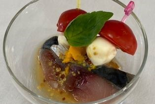
ゆず香る〆さばのカプレーゼ粒マスタード和え
敦賀湾で獲れた新鮮なさばを酢で〆た後に、食べやすいようにモッツァレラチーズと甘みのあるトマト、薄く切ったさばをマスタードで。
海鮮みなと家
680円
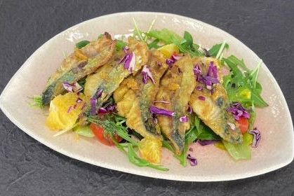
敦サカレーサラダ
敦賀湾で獲れた新鮮な鯖をカレー風味に。敦賀で採れた新鮮なお野菜と一緒に。
海鮮みなと家
890円
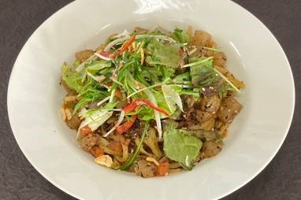
敦賀産へしこと地産の季節野菜のペペロンチーノ
敦賀産へしこの独特な味わいと敦賀で採れた新鮮な季節野菜を合わせたパスタ。
カメレオン食堂
1,500円
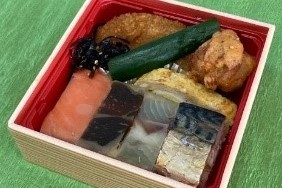
Ｔ－ＵＭＡＭＩランチ
淡白なお魚も、しっかりした味のへしこも、昆布の旨味で後を引く味に、敦賀らしさを詰め込んだお弁当。
気比の里
990円
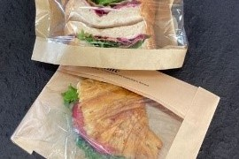
わさび昆布INアカカンバクロワッサン
敦賀産わさび昆布をアレンジした当店オリジナルのフィリング(具材)を、敦賀の伝統野菜である杉箸アカカンバで作った赤いクロワッサンにサンドしました。
酵母の工房 パナショー
390円
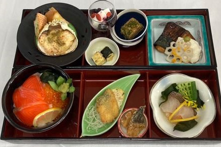
ますよね 松花堂(しょうかどう)御膳
敦賀産の新鮮な地魚を中心に、７品目以上を盛り込んでおります。
魚とごはん ますよね
2,000円
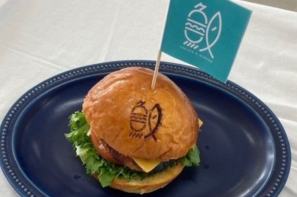
カニカニＷチーズバーガー
自社製造のカニ身ほぼ100％のパテを、特製のカニミソで、少し甘めのオリジナルバンジ(自社製造)との相性もバツグン。
サカナのバーガー敦賀駅前店
1,180円(単品)
1,580円(セット)
敦賀真鯛 潮ラーメン 極
地域の素材(魚・だし等)を最大限に活かし、敦賀市の潮風を感じてもらえる一品。
Sea of JAPAN 彩波(㈱HAF.B)
1,000円
ステーキランチコース「敦賀」
敦賀の食材をふんだんに活用し、ここでしか食べられないメニュー構成。
steak＆wine ぼたん亭(㈱ぼたん亭)
8,800円
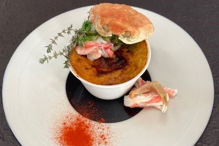
越前ズワイガニのラザニア
ズワイ蟹と敦賀野菜を余すことなく使い、旨みたっぷりのベシャメルで仕上げたラザニア。イタリアチーズの風味とご一緒に。
Speranza Fiore
2,500円
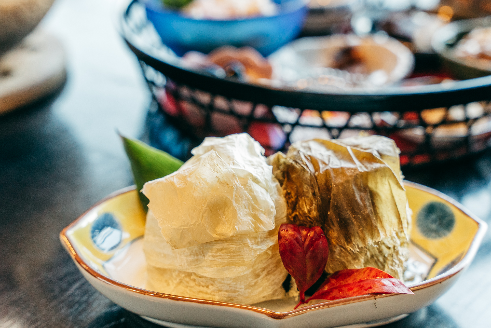
海辺の宿で朝のお結び体験♪敦賀【金銀UMAMI結び】
朝食の発酵食ご膳はそのままに、究極のお結び作り体験が可能。地場の食材をふんだんに活用しています。
敦賀さざなみリゾートちょうべい
6,800～(1泊朝食付きプランにセット)
敦賀真鯛と仲間たちのシーフードクリームパスタ
真鯛をはじめ、他の食材(タコ・イカ)も敦賀産。また、隠し味には福井産の白みそを使用。
テアトロ
1,450円
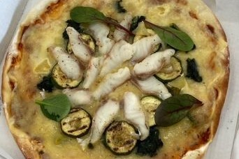
敦賀真鯛と旬の野菜のピッツァ
敦賀真鯛を昆布でしめ、トマトソースで、チーズをのせ、真鯛と旬の敦賀野菜をトッピングした薄焼きのパリパリピッツァ。
テアトロ
1,800円
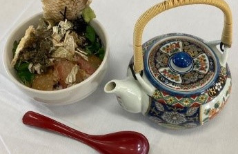
敦賀のおぼろ昆布の特製だしで食べる敦賀真鯛の鯛茶漬け
特製ごまじょうゆとおぼろ昆布の風味を、玄米茶を使っただし汁にとじこめました。鯛の旨味を存分に味わえます。
まるさん屋（㈱ザバッサ）
1,485円
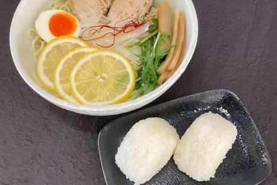
つぬがの塩レモンラーメン・つぬがの塩おにぎり
ミネラルたっぷりの角鹿の塩を用いた、阿曽地区で生産した絶妙な味わいのラーメンとおにぎり。
㈱LABwel
700円(ラーメン)
1,000円(塩おにぎり2個セット)
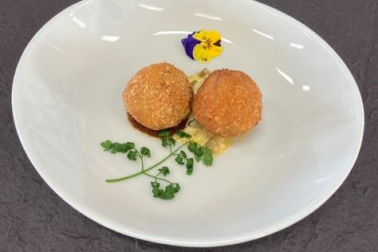
敦賀の魚介を使った円山リゾット米のスップリ
重武農園のトマトケチャップを、嶺南でも当店しか扱っていない円山リゾット米を使い、敦賀の海の恵みをイタリア料理のスップリに。
Renato
300円
お問い合わせ
Contact
敦賀商工会議所
〒914-0063
福井県敦賀市神楽町2丁目1-4
TEL:0770-22-2611
FAX:0770-24-1311
mail:
Tcci_Staff@tsuruga.or.jp